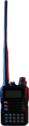
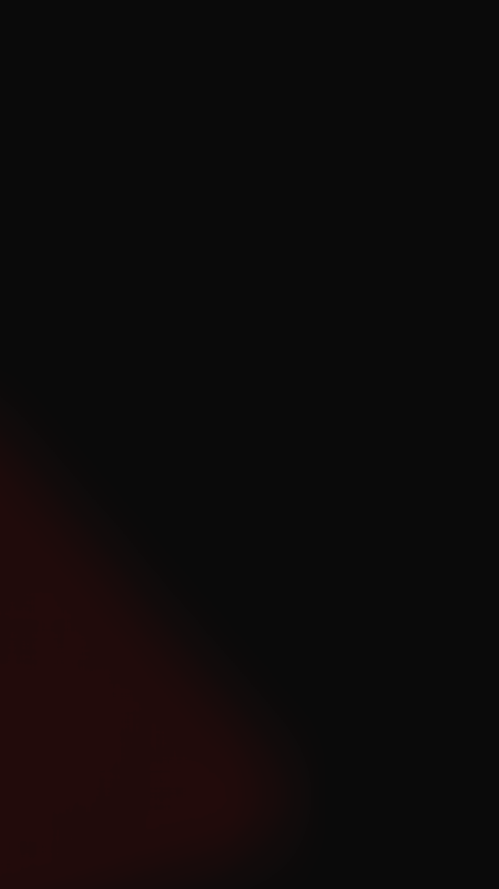

Bahis oynamak ister misin?
Seçim yap
Bahsin gönderilebilmesi için toplam çarpan EN AZ x5 olmalıdır.
Yapılan tüm seçimler bahis gecesinde gerçekleşmelidir.

ABD'de her dakika birden fazla suç işleniyor. Şiddet içeren, içermeyen, mala karşı... İnsanların olduğu yerde suç vardır. Bunu bildiğine göre gelecekte daha fazla suç işleneceğine bahse girerdin, değil mi? Paranızı masaya koyup belirli bir gecede TAM OLARAK hangi suçların işleneceğine oynamaya ne dersin?
Crisis Calls ABD'nin dört bir yanını dolaşır, yerel polis frekanslarına bağlanır ve tüm yayınları yeniden aktarır. Her ayın son cuma günü bahis kapılarımız hafta sonu için açılır. Oyuncular, bu sitede yeniden yayın başladıktan sonra sınırlı bir süre boyunca kombine bahis yapabilir.
Gönderilen her bahis yalnızca o gece için geçerlidir. Yeniden yayın etkinken gece için bir geri sayım gösterilir. Bu sitedeki her kullanıcı yayını dinleyebilir ya da yapay zekâ yazılımımızın kapalı altyazılarını görüntüleyebilir.
Zamanla dikkat edenler yayının kaynak konumunu belirleyebilir. Bu yüzden bahis oynayanların kuponlarını tutturmak için harekete geçmesiyle hafta sonunun ilerleyen gecelerinde daha fazla suç bekleyin.
Yayın alınamadı. Yeniden yayın durduruldu.
Seçim yap
Bahsin gönderilebilmesi için toplam çarpan EN AZ x5 olmalıdır.
Yapılan tüm seçimler bahis gecesinde gerçekleşmelidir.

Çark yalnızca bir kez ve bahis gönderildikten sonra döndürülebilir.
Çark, kombine bahis kuponuna rastgele bir suç ve şu olasılığı ekler:


(yalnızca bahis gönderildikten sonra etkinleşir)
Oyuncular, x5 çarpanına ulaşana kadar yukarıdaki kategorilerden suç seçmelidir. Seçimlere bağlı olarak 4 suçluk ya da 11 suçluk bir kombine bahis yapılabilir.
Seçimler yapıldıktan sonra bahis tutarı girilmelidir. Güncel alt sınır 25 DOSCoin, üst sınır ise 400 DOSCoin'dir. Bu üst sınırın artmasını istiyorsan bahis oynamaya devam et.
Yayınlar yeniden aktarılmaya başladığında Bahsi Gönder düğmesi etkinleşir. Düğme 1 saat boyunca etkin kalır; ardından bahis kapıları gecenin geri kalanı için kapanır. Aynı program hafta sonunun her gecesinde (cuma, cumartesi ve pazar) uygulanır.

- Bir bahsin geçerli olması için telsizde on kodu, açık ifade ya da kısaltma söylenebilir (ör. 10-16, Aile İçi Kavga, ADW [Öldürücü Silahla Saldırı]).
- Bu kural duruma göre uygulanır. Sistemimizden memnun değilsen düzenlemeye tabi bir kumarhaneye git.
- Telsizden bildirilen tüm suçlar doğrulanmalıdır. Başka bir deyişle, çağrıya yanıt verenler suçu onaylamalı ve seçimin geçerli olması için ilgili standart prosedürü uygulamalıdır.
- Tüm yayınları kaydetmek için akış birden fazla kişi ve otomatik kapalı altyazı üreten üç yapay zekâ yazılımı tarafından izlenir.
- Kazançlar, bahis kapandıktan 72 saat sonra bahiste kullanılan cüzdan adresine gönderilir.
- Bir frekans yetkisiz bir kişinin yayınlarıyla ihlal edilirse bu yayınlar bahislere SAYILMAZ.
- Birden fazla yayın aktarıldıktan sonra konumun eninde sonunda bulunacağının farkındayız. Bu nedenle ziyaret edilen her konum rastgele seçilir ve yalnızca sınırlı süre kullanılır.
- Kombine kuponuna rastgele eklenen suçu zaten seçtiysen o suçun İKİ KEZ gerçekleşmesi gerekir.
